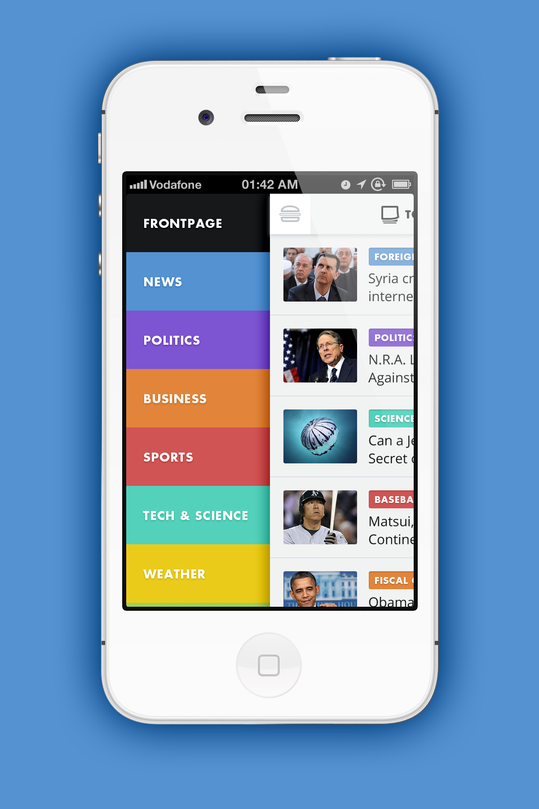

User interface design (UI) or user interface engineering is the design of user interfaces for machines and software, such as computers, home appliances, mobile devices, and other electronic devices, with the focus on maximizing the user experience. The goal of user interface design is to make the user's interaction as simple and efficient as possible, in terms of accomplishing user goals (user-centered design).
Good user interface design facilitates finishing the task at hand without drawing unnecessary attention to itself. Graphic design and typography are utilized to support its usability, influencing how the user performs certain interactions and improving the aesthetic appeal of the design; design aesthetics may enhance or detract from the ability of users to use the functions of the interface.[1] The design process must balance technical functionality and visual elements (e.g., mental model) to create a system that is not only operational but also usable and adaptable to changing user needs.